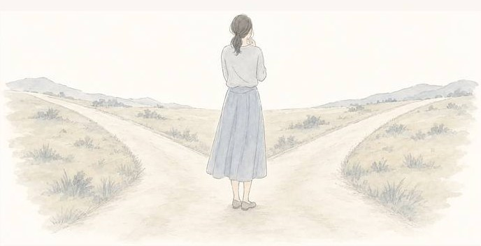

あなただけの診断結果
強み
つまずき
動き方
満たされる時
口ぐせ
あなたに向いている
WEBスキル
向いている仕事
最初に身につける型

副業やフリーランスを目指す人がはまる
3つの落とし穴
01
ゴールの金額を決めずに
学び始める
何ヶ月目でどれぐらいの目標金額を目指すのか。そのために何件の仕事を取る必要があるのか。ここを決めずに始めると、学ぶ量だけが増えていきます。
02
スキルばかり習得して
案件が獲得できない
デザイン、動画、SNS、AIとスキルを増やしても、案件を獲得できなければ、いつまでたっても1円にもなりません。
03
間違った方向に進んで
いつまで経っても成果が出ない

いま進めていることが合っているのか、外れているのか。はじめのうちは、自分では見分けがつきません。
合っているかどうかを
自分で見分けられないなら、
見分けられる人に
いちど見てもらうのが早いです。
そう思ったあなたへ
累計
1,000人以上
が受けた個別ロードマップ
作成会へ
特別にご招待します。
※2026年8月時点の累計
個別ロードマップ作成会を担当する
弊社のサポート実績
無料相談で
サポートした数
1,000人以上
法人との
取引実績
50社以上
起業歴
8年目
※2026年8月時点の累計
1,000人以上をみてきた経営者が
あなた専用のロードマップを一緒に作ります。
60分の個別ロードマップ作成会を
無料でご用意しました。

個別ロードマップ作成会で
やること
60分であなたのいまの状況を聞いて、次に進む順番を一緒に決めます。
いま持っているものの棚卸し
使える時間、これまでの経験、強みを整理します
01前に進めなくしている原因の特定
スキルか案件獲得か時間の使い方かを一緒に話しながら特定します
02ロードマップの提供
話しながら具体的にどの順番で何をやるかを整理していきます
03参加した方だけが受け取れる
3つの特典
特典 01

会社員のための
AI副業ランキング15
AIを使う副業15個の単価と月収の目安、始めるまでの日数、最初の1件の取り方
特典 02

ChatGPT・Codex・Claude Codeの実践事例20
毎日動いている自動化の仕組みを20件。前の作業時間といまの状態を並べています
特典 03

AI起業テンプレート
なにを売るか、誰に売るか、AIに任せる作業、最初の30日。作成会で一緒に埋めます
申し込みの
流れ
ここまで30秒で終わります。
STEP 01
下のボタンを押す
LINEの予約画面がひらきます
STEP 02
空いている日時をタップ
最短で明日から選べます
STEP 03
かんたんなアンケートに答えて予約する
すぐにLINEへ予約の確定とZoomのリンクが送られてきます
個別ロードマップ作成会に
参加した方の声


当日の
カウンセラー

ヒロ
法人向けマーケティング会社 経営
1,000人以上
診断と無料相談
8年
独立してからの経営歴
40万
SNSの総フォロワー
うまくいく方法は人によって違います。
だから当日は、あなたの状況だけを見て順番を決めます。